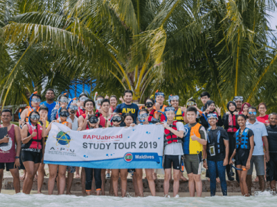
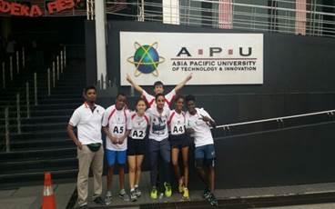
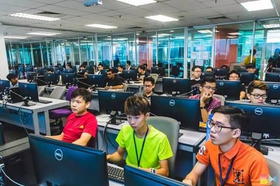

The month of July @ APU was an eventful one, particularly in encouraging the practice of a healthy living lifestyle. The APU Sports Carnival 2019 celebrated the importance of sports, health, teamwork and sportsmanship, through a record-breaking series of events that spanned over 1 month. The 2019 installment of the Sports Carnival was officially known as the largest Sports Carnival in our history, in which we recorded the highest amount of participation as well as the most variety of sports being played. In addition, this year’s Sports Carnival further encouraged the interaction of staff & students outside the classrooms and offices, as the Organizing Committee first introduced the Staff vs Students Friendly Matches for the Futsal, Netball & Volleyball events. The Staff teams won the Futsal & Volleyball events whereas the Student team championed the Netball match.

The APU Athletic Team is pleased to share their recent participation in the MAPCU-APU ROAD RELAY CHAMPIONSHIP 2016, in which they were ranked the 5th best team among participants from various private universities and colleges in the Klang Valley. This year, the championship was hosted by APU at Technology Park Malaysia (TPM). Athletes who took part in the championship demonstrated great potential and teamwork as they competed to achieve greater heights at the championship. The athletic team, who regularly organizes training sessions every Tuesdays and Thursdays, 6.00pm at TPM compound, is now calling for new registrations and recruitment, to discover future talents in the athletic field. Kudos to athletic team advisor, Thomas Raj for his efforts, and good job to all participants and volunteers who participated and assisted the event to achieve success. We look forward to gaining more sports-level achievements at the higher level in the future.

On 4th June 2016, the APU IEEE Student Branch organized a gaming competition, titled “Unorthodox: Ultimate Counter Strike Mania” at APU. The multiplayer gaming competition was open to all students at APU. Players were required to register as a team of 3-5 players and a total of 16 teams (approx. 80 players) registered for the tournament. The main objective of the event was to raise awareness among students regarding IEEE in APU and also establish a platform for APU students in order for them to develop their communication and team building skills while adding recreation to their busy lives. Cash awards, certificates and IEEE t-shirts were distributed by Prof. Ron Edwards (Deputy Vice Chancellor), Prof. Dr. Ir. Vinesh Thiruchelvam (Dean of School of Computing, Engineering and Technology) and Muhammad Ehsan Rana (Head of School of Computing and IT). After rounds of intense competition, ‘OKU’ made it through and emerged as the champion of the day. The event received overwhelming response and support from the students; as this was a good platform for them to take a break from their academics, as the saying goes, “All work but no play makes Jack a dull boy”. Some of them even requested for another tournament to be held in near future!